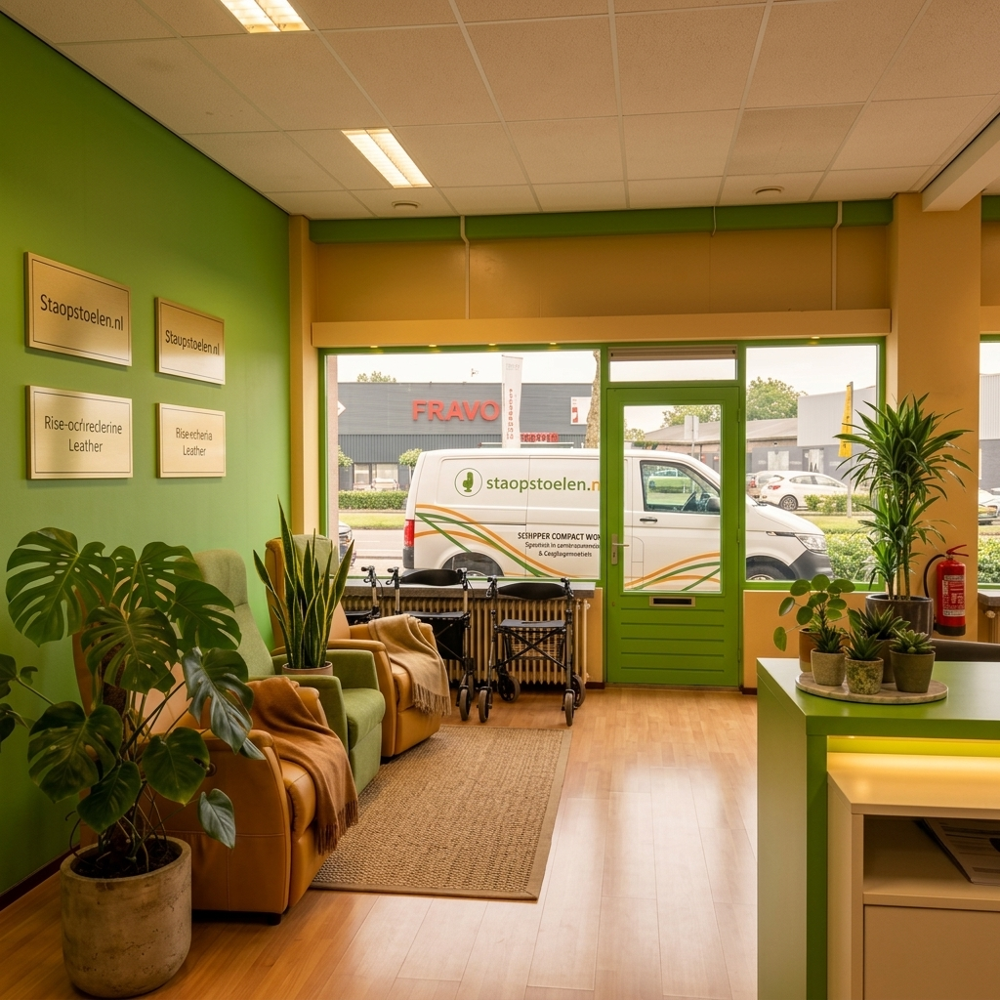
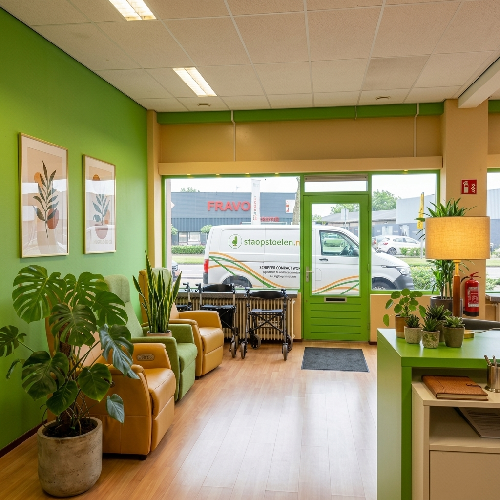

Een warme ontvangst in Dordrecht
Welkom bij Schipper Compact Wonen aan de Merwedestraat 239. Wanneer u onze showroom bezoekt, stapt u binnen in een oase van rust, huiselijke gezelligheid en deskundigheid. Wij geloven dat het uitzoeken van een sta-op stoel of ergonomische fauteuil een prettige, ontspannen ervaring moet zijn.
Waarom onze winkel zo gezellig aanvoelt:
Onze showroom is ingericht als een reeks sfeervolle huiskamers. Geen rijen met kille stalen meubelen, maar knusse zithoekjes met zachte verlichting, authentieke bakstenen details, warme houten vloeren en veel groene kamerplanten. Zo kunt u in een natuurlijke, vertrouwde omgeving ervaren hoe de stoel in uw eigen huiskamer zal staan.
Bovendien staat de koffie bij ons altijd vers voor u klaar. Onze zitadviseurs en Bewegingstechnologen nemen alle tijd voor u. We bespreken uw wensen onder het genot van een gezellig praatje en een warm kopje koffie of thee.
- Sfeervolle huiskameropstellingen om de stoelen in een realistische setting te ervaren.
- Ouderwetse gastvrijheid met verse koffie, thee en een luisterend oor.
- Persoonlijk zitadvies op maat door Bewegingstechnoloog Geert en het team.
- Gratis parkeren direct voor de deur van ons pand aan de Merwedestraat.
Sfeerimpressie in Beeld





Komt u bij ons langs in Dordrecht?
U bent van harte welkom! Plan vooraf een afspraak, of kom gewoon even binnenlopen tijdens onze openingstijden (dinsdag t/m vrijdag van 10:00 - 16:00 uur).
Plan Direct Uw Bezoek